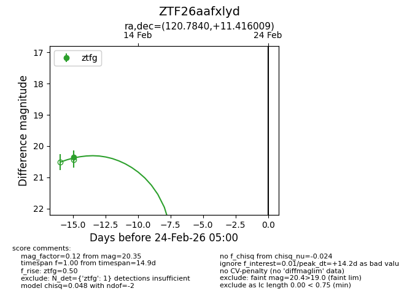
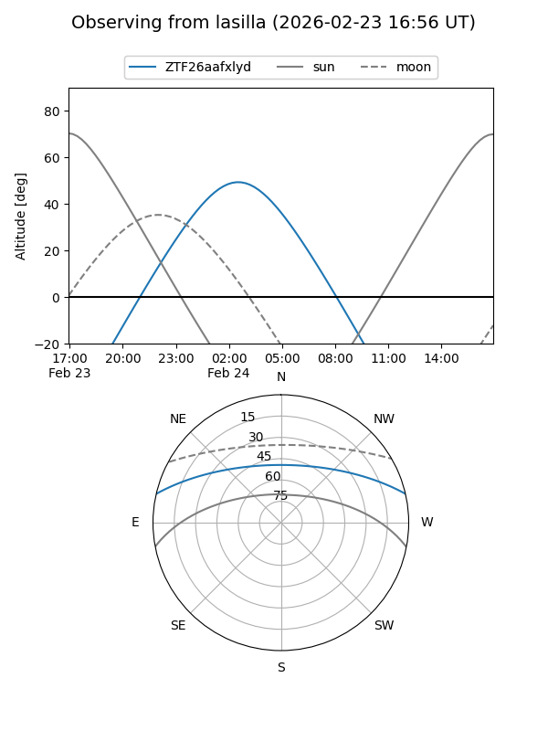
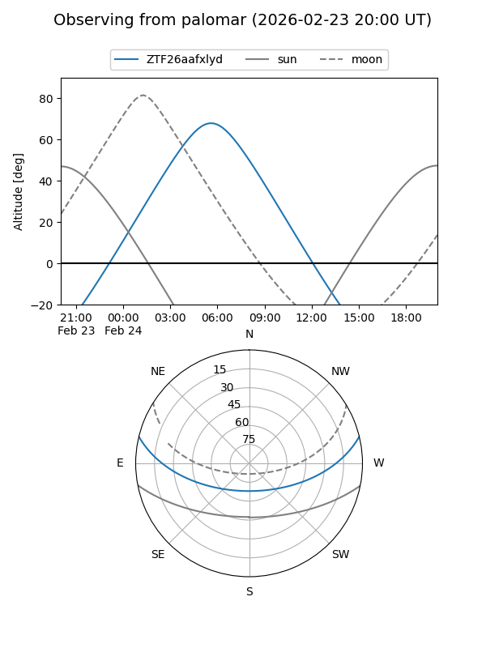

ZTF26aafxlyd
Target ZTF26aafxlyd at 2026-02-24 09:08
Aliases and brokers:
FINK: link
Lasair: link
ALeRCE: link
alt names
ZTF26aafxlyd (ztf,fink_ztf)
Coordinates:
equatorial (ra, dec) = 120.7840,+11.41601
equatorial (HMS+DMS) = 08:03:08.16,+11:24:57.63
galactic (l, b) = (210.5621,+21.02288)
Flags:
Photometry:
last ztfg=20.35
1 ztfg detections
Lightcurve

Visibility


Additional plots